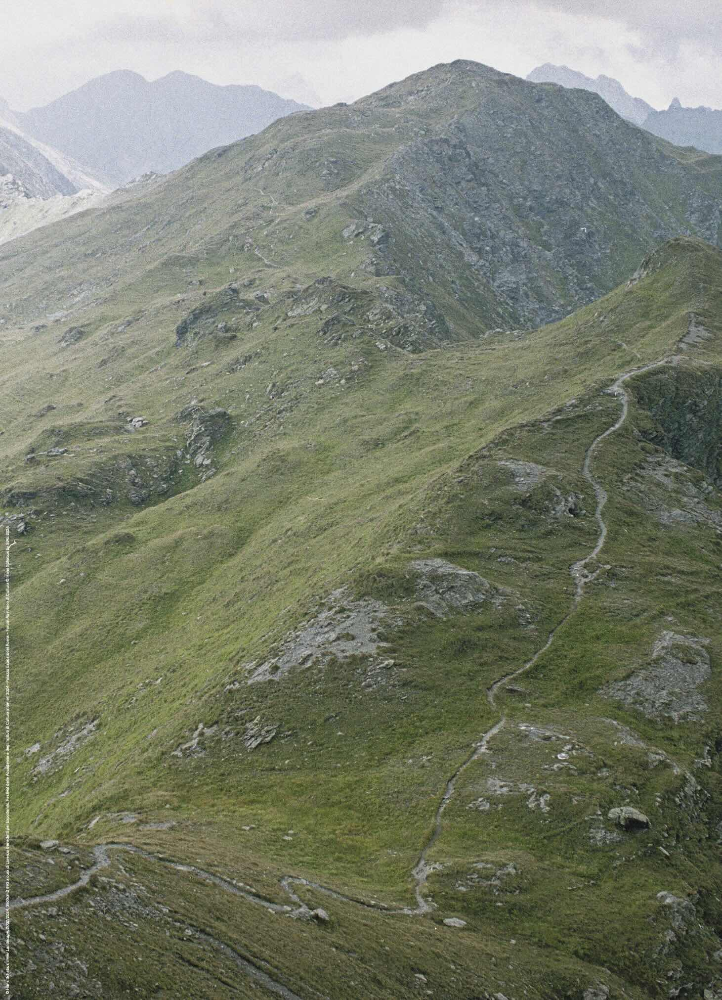
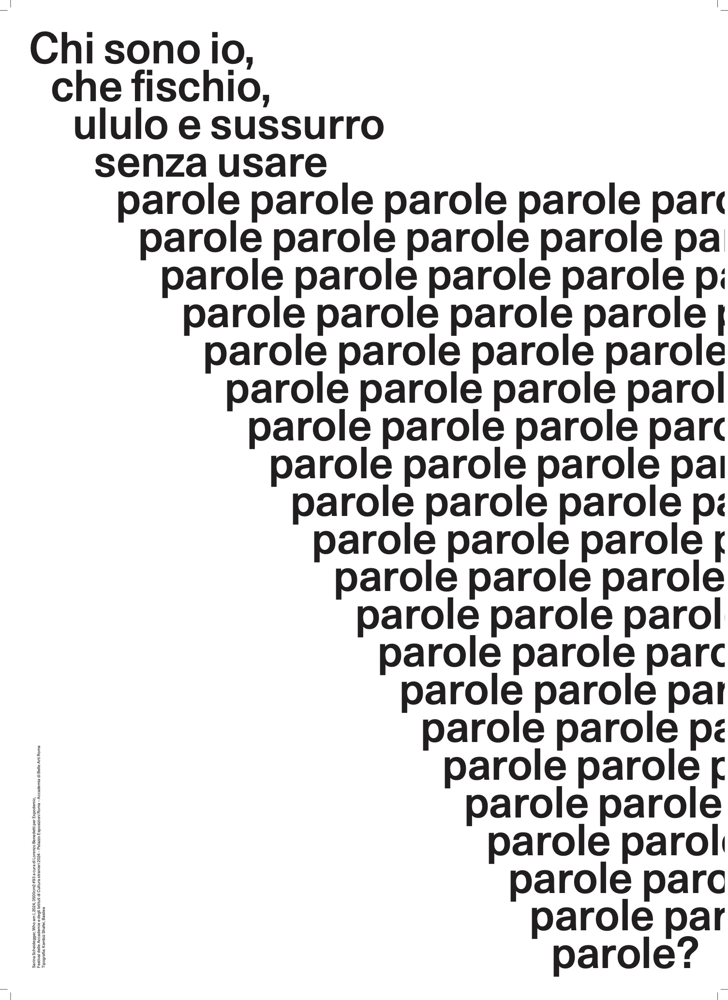
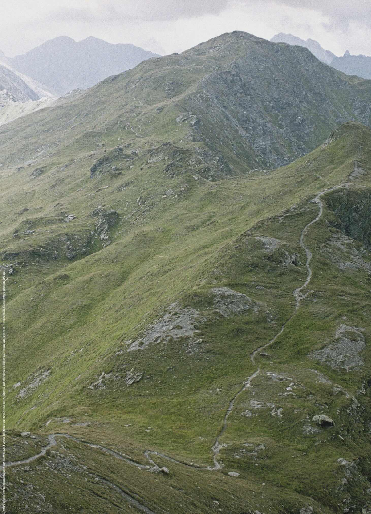
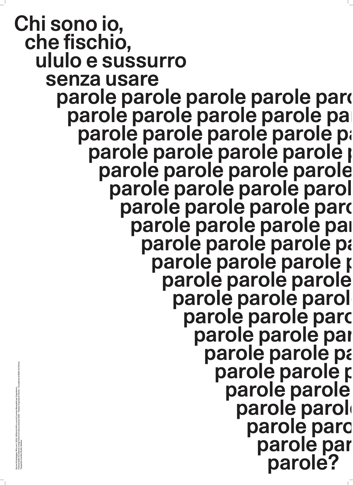

Paolo Icaro
Trattoria ideale
Fondazione VOLUME!
ROME 2025 3500 cm² Paolo Icaro  Trattoria Ideale Fondazione VOLUME!
Fondazione VOLUME! Via di San Francesco di Sales 86/88, Rome
On March 9, 2025, from 12:00 PM to 8:00 PM, Fondazione VOLUME! presents Trattoria Ideale, a work by Paolo Icaro (Turin, 1936), curated by Lorenzo Benedetti. In this project, Icaro transforms the spaces of VOLUME! into a place of sharing and interaction. Trattoria Ideale recreates within the venue a convivial atmosphere inspired by the welcoming nature of traditional Trastevere taverns. VOLUME! is reimagined as a space for exchange, where words, images, and sounds intertwine to stimulate the senses and foster dialogue. Icaro extends the concept of nourishment beyond food, proposing art as an essential sustenance for individual and collective growth. Visitors are invited to “feast with their eyes,” turning reading and observation into an experience of intellectual and sensory nourishment. Trattoria Ideale becomes a hub of exchange, merging aesthetic and relational dimensions in a continuous dialogue between body, space, and thought. Surpassing the boundaries of traditional exhibitions, it evolves into a participatory and multisensory experience, inviting visitors to immerse themselves in art, words, and ideas, making artistic engagement a vital experience. Through this intervention, Paolo Icaro eliminates the distance between artwork and visitor, encouraging tactile interaction, modification, and internalization of the artistic experience. In this convivial setting, one consumes by observing, reads by devouring with the eyes, and satiates the mind. The experience culminates in a transcendent moment: upon passing through a transparent threshold, visitors find themselves immersed in an expanse of light where voices whisper words intertwined with evocative sounds composed by Alessandro Petrolati. This sensory and intellectual journey transcends traditional art exhibition boundaries. For this occasion, Paolo Icaro has created a new project, 3500 cm² #106 “Trattoria Ideale”: www.3500cm2.org.
Biography: Paolo Icaro (born in Turin, 1936) is a prominent figure in the artistic explorations of the 1960s. He began his career studying sculpture in Umberto Mastroianni’s studio. After his first solo exhibition in Rome in 1962, he became associated with the Arte Povera movement, experimenting from the outset with the evolution of sculptural action in relation to form and space, utilizing elemental and malleable materials such as cement, clay, paper, wood, and plaster. Between 1968 and 1969, he participated in major international avant-garde exhibitions that marked the rise of movements like Arte Povera, Conceptual Art, and Process Art. He conducted performances at Teatro delle mostre, Galleria La Tartaruga, Rome (1968); took part in Arte Povera più azioni povere, Amalfi (1968); and was invited to Op Losse Schroeven. Situaties en cryptostructuren at the Stedelijk Museum, Amsterdam (1969), and When Attitudes Become Form, curated by Harald Szeemann at the Kunsthalle in Bern (1969). In 1971, he relocated to Connecticut, USA, where he resided throughout the decade. Returning to Italy in the early 1980s, he exhibited in major museums and galleries across Europe and the United States, continuing to explore materials like plaster and focusing on concepts of body and space. He currently lives and works in Tavullia, in the province of Pesaro.   
XX Giornata del Contemporaneo
Consolato d’Italia a Parigi
Contemporalis
CONTEMPORALIS participates in the Giornata del Contemporaneo, the Italian day dedicated to contemporary art.
On the occasion of the 20th edition of GDC, CONTEMPORALIS presents 3500 cm², a project that this year celebrates its 20th anniversary. 3500 cm² is a contemporary art dissemination initiative curated by Lorenzo Benedetti. 3500 cm² refers to the square centimeters available to an artist to create a 50×70cm poster, with the mission of bringing the language of contemporary art to a broader and more diverse audience than that typically engaged with contemporary art.
On Tuesday, October 15, CONTEMPORALIS also organized a conference on contemporary art at the Italian Consulate in Paris, moderated by Maddalena Labricciosa, RAI journalist and art expert – TG1. The event featured Lorenzo Benedetti, co-director of the Ratti Foundation Art-Lab and creator and curator of the 3500 cm² project, artist Marinella Senatore, and artist Diego Cibelli, who joined via live streaming from Naples. On this occasion, posters by Italian artists Marinella Senatore and Diego Cibelli were distributed free of charge.


EXPODEMIC - Festival of Foreign Academies and Cultural Institutes
Palazzo Esposizioni Roma - 07.05 - 25.08.2024
Curated by Lorenzo Benedetti in collaboration with Francesca Campana
Artists 3500 cm²: John Armleder, Elisabetta Benassi, Attila Csörgő, Simon Dybbroe Møller, Robert Kusmirowski, Cristina Lucas, Jochen Lempert, Domenico Mangano & Marieke van Rooy, Matt Mullican, Ciprian Mureşan, Tura Oliveira, Giulio Paolini, Fernando Sánchez Castillo, Hans Schabus, Sarina Scheidegger, Nil Yalter, Nicole Wermers, sono inoltre riproposti due poster realizzati con opere di Carla Accardi e Vladimir Radunsky.
Exhibition promoted by Rome the Capital City's Cultural Affairs Department and the Azienda Speciale Palaexpo
Organised by the Azienda Speciale Palaexpo in conjunction with Accademia di Belle Arti di Roma, Accademia di Danimarca, Académie de France à Rome – Villa Médicis, Accademia Nazionale di San Luca, Accademia di Romania in Roma, Accademia Tedesca Roma Villa Massimo, Accademia d'Ungheria in Roma, Accademia dei Virtuosi al Pantheon, American Academy in Rome, British School at Rome, Circolo Scandinavo, Complesso monumentale di San Salvatore in Lauro, Forum Austriaco di Cultura, Institutum Romanum Finlandiae, Istituto Culturale Coreano, Istituto Giapponese di Cultura, Istituto Polacco di Roma, Istituto Svizzero, Museo Casa di Goethe, Royal Netherlands Institute in Rome, Real Academia de España en Roma.
Artists exhibition Expodemic: Kamrooz Aram, Ane Rodriguez Armendariz, Séverine Ballon, Jacopo Belloni, Alix Boillot, Susanne Brorson, Fatma Bucak, Pedro Luis Cembranos, Zachary Fabri, Hamedine Kane, Kapwani Kiwanga, Bjørn Melhus, Marko Nikodijevic, Tura Oliveira, Estefania Puerta Grisales, Chloé Quenum, Marie Robert, Sarina Scheidegger.
Expodemic is the second edition of the Festival of Foreign Academies and Cultural Institutes in Rome designed to spread out from the Palazzo Esposizioni Roma into the fabric of the city. The exhibition recounts the close bond between the founding and development of exhibitions and the history of the academies, both through the involvement of foreign artists currently resident in the city and through historical documents. Rome not only hosts the largest number of international cultural centres whose intertwined stories date back to 1666 with the founding of the Académie de France, it is also the city in which the modern concept of the exhibition was first developed. For over forty years, from 1680 to 1720, Giuseppe Ghezzi, a painter, the Secretary of the Accademia di San Luca and the regent of the Congregation of the Virtuous at the Pantheon, organised a series of important exhibitions in the monumental complex of San Salvatore in Lauro, showcasing artworks from the collections of Rome’s aristocratic families and thus forging the concept of the modern exhibition. Thanks to his ability to understand his own period in history, Ghezzi made art public through his series of exhibitions, developing a modern and democratic notion of culture and, in effect, playing the role of history’s first modern curator.Expodemic sets out from the Palazzo Esposizioni exhibition to spread throughout the city with a series of posters specially produced for the occasion and distributed free of charge in its cultural partners’ various venues. The exhibition aims to illustrate the importance of the deep-rooted bond between the Palazzo delle Esposizioni and Rome’s Foreign Academies and Cultural Institutions, highlighting that cultural archipelago’s richness and diversity as well as its ongoing role, so crucial and relevant to our own time. The exhibition also includes a public programme of encounters, performances and screenings hosted at Palazzo Esposizioni in addition to numerous exhibitions and events organised in the Academies and Cultural Institutes themselves.
 Matt Mullican
Matt Mullican
 Giulio Paolini
Giulio Paolini
 Nil Yalter
Cristina Lucas
Nil Yalter
Cristina Lucas
 Carla Accardi
Carla Accardi
 John Armleder
John Armleder
 Elisabetta Benassi
Elisabetta Benassi
 Attila Csörgő
Attila Csörgő
 Simon Dybbroe Møller
Robert Kusmirowski
Jochen Lempert
Simon Dybbroe Møller
Robert Kusmirowski
Jochen Lempert
 Domenico Mangano & Marieke van Rooy
Ciprian Mureşan
Domenico Mangano & Marieke van Rooy
Ciprian Mureşan
 Tura Oliveira
Tura Oliveira
 Fernando Sánchez Castillo

Hans Schabus

Sarina Scheidegger
Fernando Sánchez Castillo

Hans Schabus

Sarina Scheidegger
 Nicole Wermers
Vladimir Radunsky
Nicole Wermers
Vladimir Radunsky
Roma incontra il mondo - Villa Ada - Fondazione Volume! - Roma
Villa Ada Roma 2016
Artists 3500 cm²: Francesco Arena, Marc Nachtzaam, Batia Suter, Mandla Reuter.
The project hosted by Villa Ada Rome meets the world is 3500 cm², a project curated by Fondazione VOLUME! x Crosswise, born in 2004 from an idea by Lorenzo Benedetti. 3500 cm² are the square centimetres available to an artist to create a 50 x 70 poster, but it is also the art that lives in an urban place, that goes out of its spaces to reach a heterogeneous and larger public than the one that usually visits museums and galleries: an exhibition without spatial and temporal boundaries that develops over time and spreads without control, an unprecedented way of building a cultural platform that amplifies the communicative possibilities of art, a possible form of interaction between artist and public.
 Francesco Arena
Francesco Arena
 Marc Nagtzaam
Batia Suter
Mandla Reuter
Marc Nagtzaam
Batia Suter
Mandla Reuter
De Vleeshal en de Kabinetten van de Vleeshal
Artisti 3500 cm²: Nina Beier & Marie Lund, Katinka Bock, Benoit Maire, Kelly Schacht.
https://vleeshal.nl/archive/the-object-lessons https://vleeshal.nl/en/archive/the-sound-of-distance https://vleeshal.nl/nl/archief/persoon/benoit-maire https://vleeshal.nl/archive/person/kelly-schachtFor several of exhibitions between 2009 and 2013, editions of 3500 cm² were produced, which were often integrated directly into the exhibition.